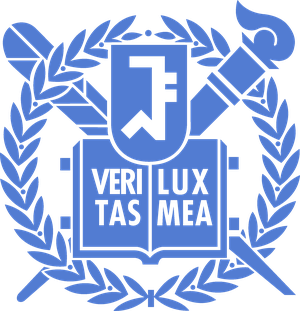

Research Intern2026.05 – Present

On-Chip Quantum Frequency Conversion in LN-on-SiN Waveguides
Seoul National University (SNU), Q-SPIN Lab, Republic of Korea
Project with Samsung Advanced Institute of Technology (SAIT)
- Designed an LN-on-SiN platform integrating directly bonded z-cut thin-film lithium niobate and laterally split-poled domains for efficient quantum frequency conversion via modal phase matching.
- Performed eigenmode and overlap-integral simulations (Ansys Lumerical MODE / FDE) to optimize phase-matched conversion, achieving a simulated normalized conversion efficiency of 350 %/W/cm².
- Preparing SiN waveguide fabrication and LNOI bonding at SNU ISRC FAB, including a LIGENTEC SiN foundry chip tape-out.